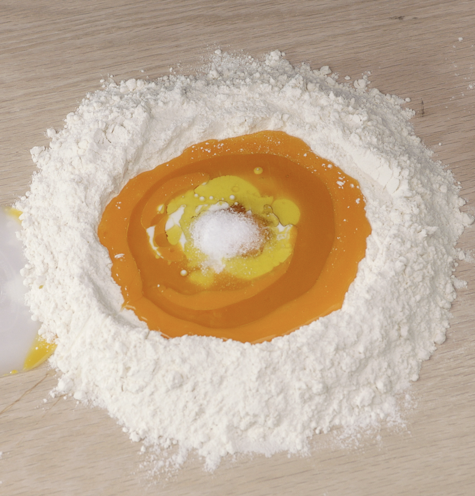

Pasta Dough

This is a Pasta dough recipe for creating Pasta from scratch. This recipe originates from Thomas Keller a 3 Michelin Star Chef from the United States
Ingredients
500 grams Tipo “00” flour
250 grams egg yolks (ideally from Jidori hens)
1 whole egg
15–30 grams milk
25 grams extra-virgin olive oil
- In the center of a large cutting board or pasta board, place the flour in a mound. Use a bench scraper in hand, set aside about 1/6 of the flour. This flour is reserved for if your dough is too wet, as it is easier to add flour to a wet dough than to add liquid to a dry dough
- Make a large well in the center of the mound
- Pour in the yolks, the whole egg, milk, olive oil, and salt
- With two fingers, begin swirling the ingredients together, incorporating in flour a little bit at a time, until it becomes a thick paste
- Use the bench scraper to fold flour over the paste and cut in the flour
- Once the flour as been in- corporated, knead the dough until it resembles a smooth ball
- If the dough is very sticky, add a small amount of the reserve flour as needed. It takes practice to know when the dough has reached the right tightness
- Put dough into a sealable plastic storage bag and refrigerate at least 4–5 hours so that the gluten has time to relax before rolling out the pasta. The dough can also be made a day ahead.